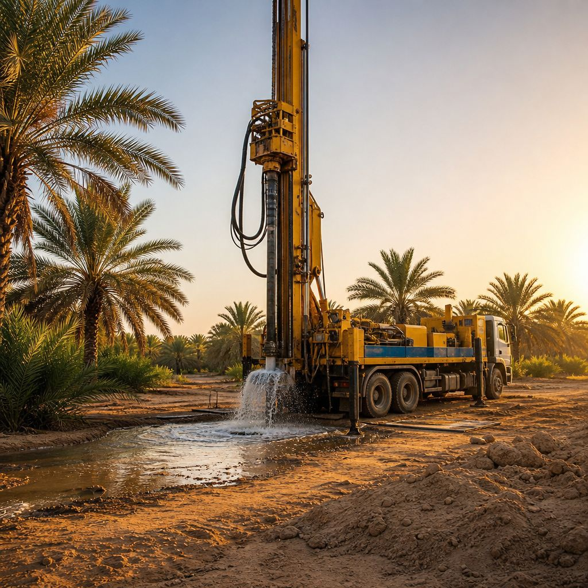

آفاق الإنجاز
مكتب آفاق الإنجاز العقاري
للخدمات العقارية
خدمات عقارية متكاملة — من رخص البناء حتى إدارة أملاكك باحترافية
في مكتب آفاق الإنجاز العقاري لا نكتفي ببيع العقار، بل نوفر لك خدمة متكاملة تمتد من لحظة الشراء حتى ما بعد التملك. خبرتنا الممتدة لـ 20 سنة في السوق العقاري السعودي تؤهلنا لتقديم أفضل الحلول لعملائنا.
نتولى عنك كافة إجراءات استخراج رخص البناء من البلديات والإدارة المعنية، مع متابعة المخططات الهندسية والموافقات اللازمة حتى الحصول على الرخصة في أسرع وقت ممكن ووفق الأنظمة المعمول بها في المملكة العربية السعودية.
اطلب الخدمةنوفر خدمات المقاولات العامة لبناء المزارع والاستراحات والفلل السكنية بجودة عالية وأسعار منافسة. لدينا فريق من المهندسين والفنيين المحترفين لتنفيذ مشاريعك من الأساس حتى التسليم بأعلى معايير الجودة والسلامة.
اطلب الخدمةخدمات تشطيب داخلي وخارجي للمزارع والاستراحات والمنازل بأحدث التصاميم وأرقى الخامات. نوفر تشطيبات فاخرة وسوبر لوكس واقتصادية حسب رغبتك وميزانيتك، مع ضمان الجودة والتسليم في الوقت المحدد.
اطلب الخدمةخدمة إدارة أملاك متكاملة لأصحاب العقارات الذين يرغبون في تأجير أو إدارة عقاراتهم عن بُعد. نتولى التأجير، تحصيل الإيجار، الصيانة الدورية، ومتابعة العقار لضمان أعلى عائد استثماري دون عناء.
اطلب الخدمةخدمة حفر الآبار الارتوازية للمزارع باستخدام أحدث المعدات والدراسات الجيولوجية لتحديد أفضل المواقع لاحتمالية وجود الماء. نضمن لك حفراً احترافياً مع توفير تقارير فنية دقيقة حول طبيعة التربة والمياه الجوفية.
اطلب الخدمةخدمة تصوير احترافي للعقارات والاستراحات والمزارع بكاميرات عالية الدقة، مع تصوير جوي بالدرون لإبراز العقار بشكل جذاب يزيد من فرص البيع والتسويق. تصوير احترافي يجعل عقارك متميزاً عن غيره.
اطلب الخدمةنتميز بمجموعة من المزايا التي تجعلنا الخيار الأول لعملائنا في الخرج والرياض
خبرة طويلة في السوق العقاري السعودي ومجال خدمات ما بعد البيع
مهندسون وفنيون متخصصون في كل مجال من مجالات الخدمة
نلتزم بإنجاز الأعمال في الوقت المتفق عليه دون تأخير
أسعار تنافسية تناسب جميع الميزانيات مع ضمان الجودة

نوفر خدمة حفر الآبار للمزارع باستخدام أحدث المعدات والدراسات الجيولوجية. فريقنا المتخصص يقوم بتحديد أفضل المواقع لاحتمالية وجود المياه الجوفية باستخدام أجهزة المسح الجيوفيزيائي، ثم يبدأ الحفر باحترافية عالية مع ضمان جودة العمل وتوفير تقرير فني كامل عن البئر.